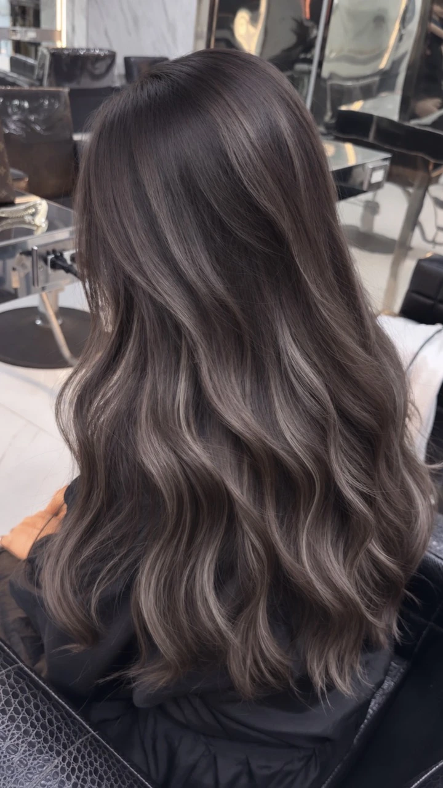

設計特色
刷染怎麼做才自然
點點看
一張作品，看三個重點
點照片上的 1、2、3，看看刷染時我注意哪些地方。

01 / 03
數字只是標出照片裡看得到的地方，不是實際染髮的位置。
小測驗
三題，
找到你的設計。
作品集
左右滑動瀏覽 18 件真實作品。按 ♡ 收藏喜歡的，預約時一次告訴 COOPER。
皆為真實作品照片，保留原色與比例；不同客人作品，並非前後對照。
服務項目
01剪裁輪廓剪髮
依臉型、髮流與平常整理方式調整輪廓和層次，讓髮型回家自己整理也有樣子。
我會先看髮流、髮量分布、你的整理習慣
02客製刷染手刷線條
依層次與髮量決定線條的粗細、密度與位置，深淺自然融合，避免一條一條的分界感，也考慮留長後的銜接。
我會先看層次、髮量、分線與綁髮習慣、目前底色
03白髮共存讓白髮變成設計
依頭頂、分線與鬢角的白髮分布安排線條，讓白髮成為設計的一部分，並把新生髮的銜接一起規劃。仍需依生長與退色安排維護。
我會先看白髮分布、生長速度、你想保留的自然感
04單色染不做線條的髮色
不做線條，也能有好看的髮色。依膚色、底色與喜歡的明暗挑選色調，在意光澤與整體的一致。
我會先看目前底色、過去染燙紀錄、想要的亮度
費用與所需時間，依髮長、髮量與目前髮況評估後，於 LINE 說明。
客人怎麼說
客人傳來的真實訊息，匿名節錄；與作品照片未配對，每個人的髮況與感受不同。
常見問題
需要漂髮嗎？我很在意髮質。
依目前底色、過去染燙紀錄與想要的亮度評估。染漂會影響髮況，會先說明可行方向與後續保養，再一起決定這次做到什麼程度。
白髮長出來後，需要一直補染嗎？
白髮共存會把新生髮的銜接納入設計，但仍需要維護。白髮分布、生長速度與你想維持的樣子都會影響整理間隔，並不是做一次就永遠不用再染。
預約前，要準備什麼？
不用特別準備。可以說說你喜歡的樣子、最近的染燙經驗，或你最擔心的地方，我們再一起討論。
費用和店址在哪裡看？
費用會依髮長、髮量與髮況評估後說明；店址與營業時間，預約時於 LINE 告知。
預約
從一段對話，
開始下一個風格。
- 01用 LINE 告訴我想要的感覺
- 02說明方向、費用與需要的時間
- 03約好時間，見面再確認一次